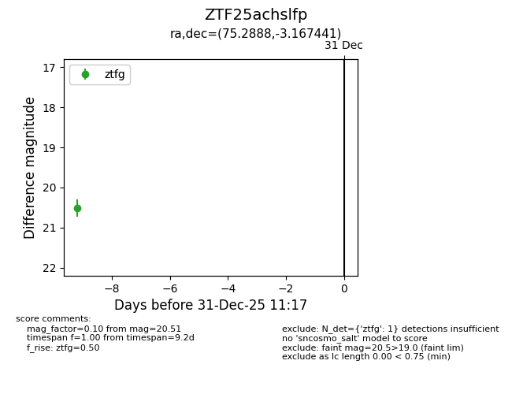
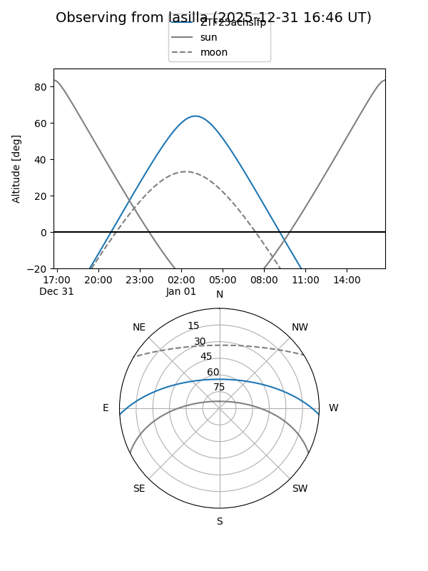

ZTF25achslfp
Target ZTF25achslfp at 2025-12-22 16:31
Aliases and brokers:
FINK: fink-portal.org/ZTF25achslfp
Lasair: lasair-ztf.lsst.ac.uk/objects/ZTF25achslfp
ALeRCE: alerce.online/object/ZTF25achslfp
alt names
ZTF25achslfp (ztf,fink_ztf)
Coordinates:
equatorial (ra, dec) = 75.2888,-3.16744
equatorial (HMS+DMS) = 05:01:09.31,-03:10:02.79
galactic (l, b) = (202.5878,-25.88016)
Flags:
Photometry:
last ztfg=20.51
1 ztfg detections
Lightcurve

Visibility


Additional plots